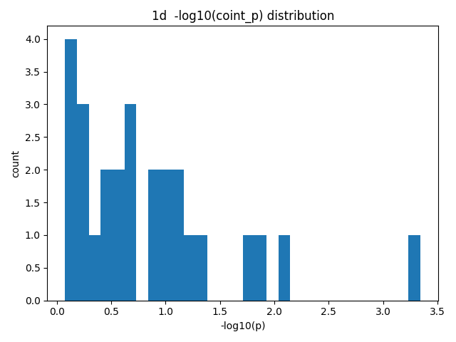
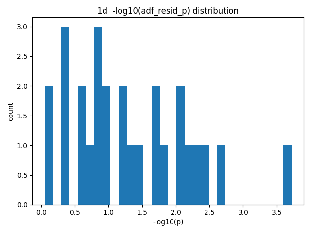
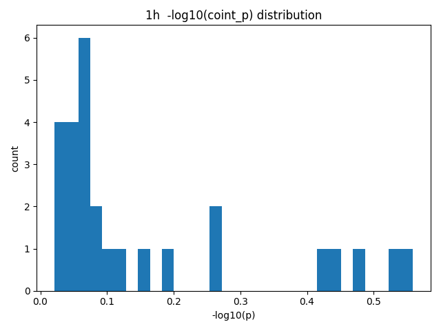
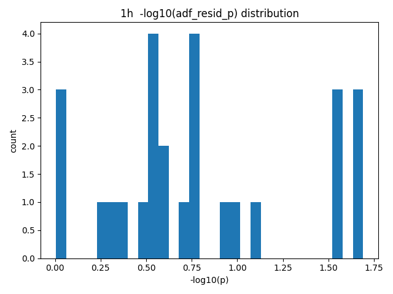
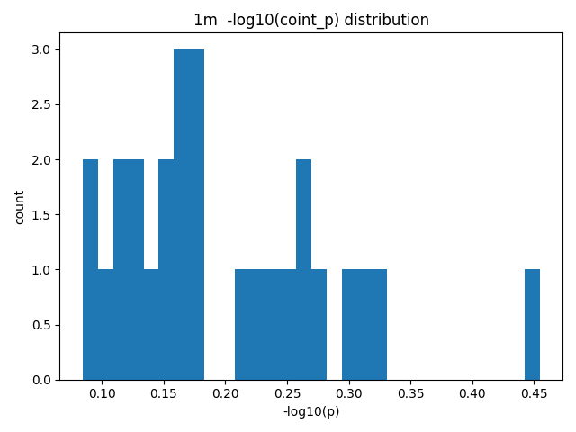
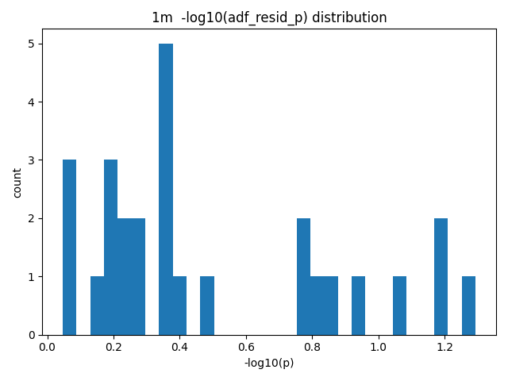

# 업비트 공적분 탐색 보고서
생성 시각: 2025-08-27 06:42:41 UTC
1"> 지표 설명
피어슨 상관계수 (r, p">: 동시시점 상관관계의 선형강도와 유의성입니다. 공적분은 단기 상관과는 다른 개념이므로, r이 낮아도 공적분일 수 있습니다.
Engle–Granger (EG"> 공적분 검정: 두 비정상 시계열 X, Y가 특정 선형결합으로 정상성을 가지는지(=장기균형관계 존재">를 검정합니다. 여기서는 `coint_p`가 작을수록 공적분 증거가 강합니다.
잔차 ADF (단위근"> 검정: 회귀 \(Y_t = \alpha + \beta X_t + e_t\">의 잔차 \(e_t\">가 정상성을 가지는지를 검정합니다. `adf_resid_p`가 작을수록 정상성(=공적분 일관성"> 증거가 강합니다.
헤지비율(OLS β">: EG 1단계 회귀에서의 기울기 추정치로, 스프레드 구성 \(e_t = Y_t - \alpha - \beta X_t\">에 쓰입니다.
리드 테스트: 본 연구는 (X(t">, Y(t+k">">를 검정합니다. 즉 Y를 k스텝 리드하여 미래값이 X의 현재와 장기관계를 갖는지 확인합니다. 전략화 단계에서는 미래정보 누출을 피하기 위해 롤링/아웃오브샘플 검증이 필수입니다.
판정 기준: 기본 5% 유의수준에서 `coint_p<0.05` AND `adf_resid_p<0.05`를 엄격한(Strict"> 기준으로, 둘 중 하나라도 5%면 완화(Loose"> 증거로 표기했습니다. 또한 (timeframe, k"> 그룹 내부에서 Benjamini–Hochberg FDR(0.05">로 다중검정을 보정했습니다.
2"> 데이터 및 방법
거래소: Upbit KRW 마켓 (X=KRW-BTC, Y=상위 9개 알트">
캔들: 1분봉 1000개, 1시간봉 500개, 1일봉 100개 (요청 시점 기준 과거">
리드(선행"> 라그: k ∈ {3, 5, 10}
공적분 검정: EG + 잔차 ADF, 유의수준 α=0.05, FDR q=0.05
실험 대상 페어 수: 81 (결측 제거 및 표본<30 제외 후 기준">
사용 표본 개수 통계(관측치 n_obs">:
| timeframe | min | max | mean |
|:------------|------:|------:|--------:|
| 1d | 100 | 100 | 100 |
| 1h | 499 | 500 | 499.963 |
| 1m | 591 | 1000 | 953.296 |
3"> 결과 요약
3.1 전체 Top 페어 (엄격 기준; both_5">
KRW-XRP | tf=1d, k=3, n=100, score=7.06, coint_p=4.53e-04, adf_p=1.92e-04, β=0.0000805843
3.2 타임프레임별 Top 3 (엄격 기준">
1d:
KRW-XRP | tf=1d, k=3, n=100, score=7.06, coint_p=4.53e-04, adf_p=1.92e-04, β=0.0000805843
KRW-CKB | tf=1d, k=5, n=100, score=4.59, coint_p=1.18e-02, adf_p=2.17e-03, β=0.0000001283
KRW-XRP | tf=1d, k=5, n=100, score=4.46, coint_p=9.05e-03, adf_p=3.87e-03, β=0.0000780265
3.3 (timeframe, k">별 유의 페어 수
| timeframe | lag_k | n_pairs | n_coint_5 | n_adf_5 | n_both_5 | n_bh_both | avg_n_obs |
|:------------|--------:|----------:|------------:|----------:|-----------:|------------:|------------:|
| 1d | 3 | 9 | 2 | 4 | 2 | 1 | 100 |
| 1d | 5 | 9 | 2 | 5 | 2 | 0 | 100 |
| 1d | 10 | 9 | 0 | 2 | 0 | 0 | 100 |
| 1h | 3 | 9 | 0 | 2 | 0 | 0 | 500 |
| 1h | 5 | 9 | 0 | 2 | 0 | 0 | 500 |
| 1h | 10 | 9 | 0 | 2 | 0 | 0 | 499.889 |
| 1m | 3 | 9 | 0 | 0 | 0 | 0 | 954.111 |
| 1m | 5 | 9 | 0 | 0 | 0 | 0 | 953.667 |
| 1m | 10 | 9 | 0 | 0 | 0 | 0 | 952.111 |
4"> 해석 가이드 & 추천
가장 공적분에 잘 맞는 페어는 (a"> `both_5`를 만족하고, (b"> `score=-log10(coint_p">-log10(adf_p">`가 큰 순입니다.
동일 (timeframe, k"> 내 다중검정 보정(BH-FDR 5%">을 통과한 `bh_both` 페어는 보다 견고한 후보로 간주할 수 있습니다.
실전 전략화 시:
1"> 롤링 윈도우로 β/α 재추정 및 스프레드 정상성 재검정(워크포워드">
2"> 스프레드 z-score 엔트리/청산 + 거래비용/슬리피지 반영 백테스트
3"> 라그(k"> 및 주기별 민감도 분석, 안정성 높은 조합 선호
5"> p-value 분포 도표





